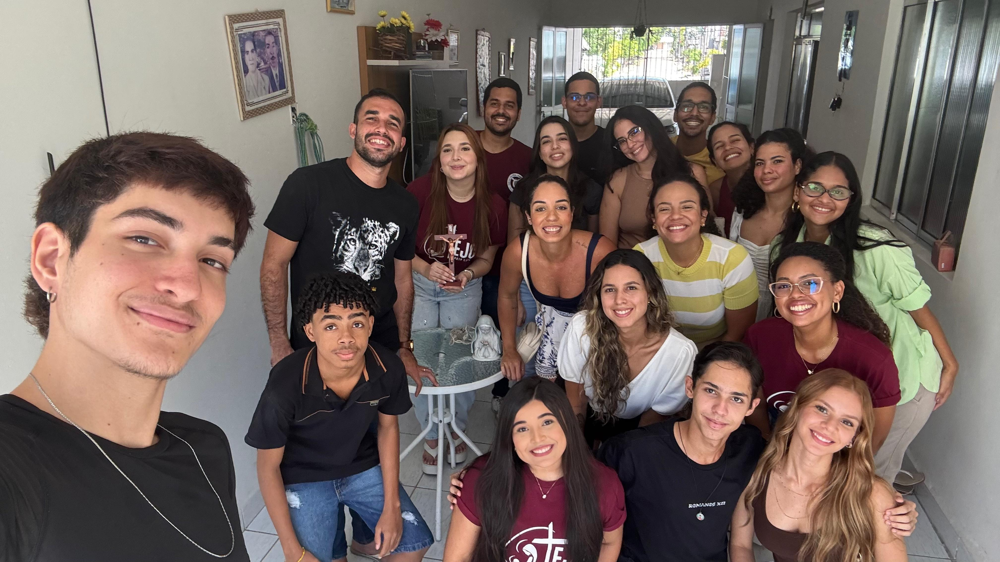
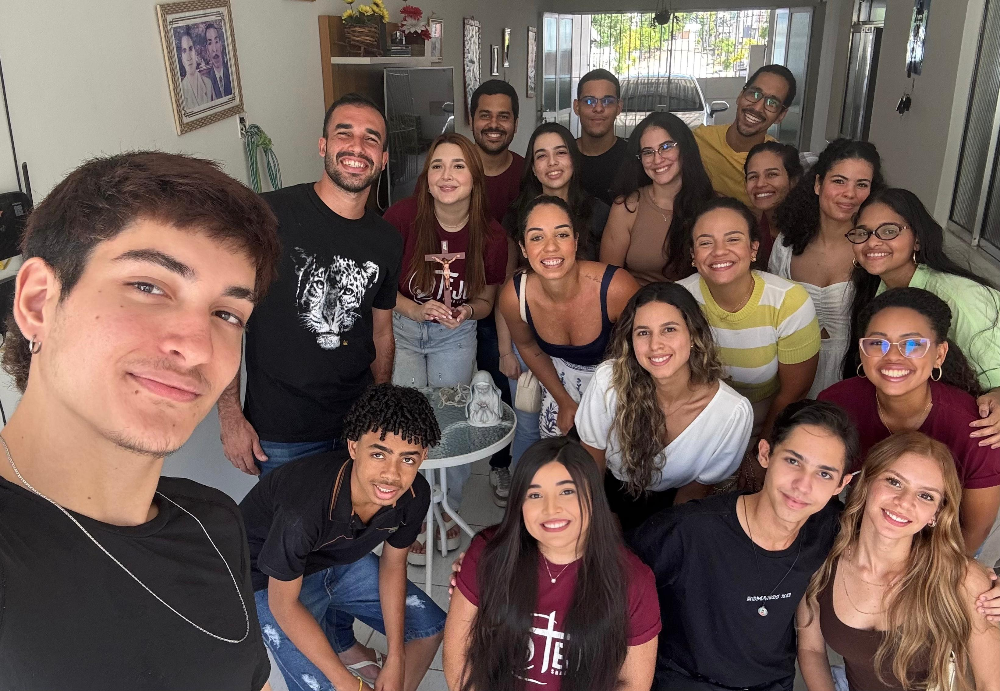

O Encontro de Jovens com Cristo (EJC) é uma experiência única que transforma corações. Se você já participou, ajude outras pessoas a viverem o mesmo. Se ainda não participou, está convidado a fazer parte. Com sua ajuda, poderemos proporcionar um final de semana inesquecível a dezenas de jovens.
Todo valor arrecadado será usado para cobrir alimentação, transporte, material de evangelização e estrutura do evento.
